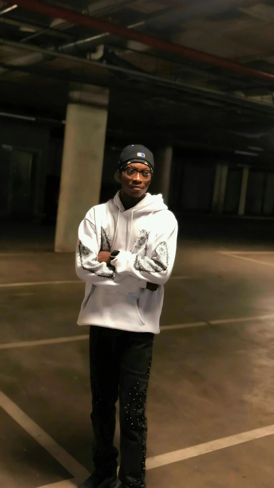

UENR Freshers Guide Creator Computer Engineering L100 UENR Sunyani
About Me: I am Theophilus Agyemang, known online as Bericch. I completed Osei Tutu SHS and now pursuing my dream course, Computer Engineering at UENR Sunyani, Level 100.
My dream is to prove to the world that technology doesn't speak about skin color but brain. I started creating websites right after SHS with a Samsung S7 that people said was not important because it had passed. That phone became my first computer.
I built the UENR Freshers Guide — a digital hub to help incoming UENR freshers with fees, hostel budgeting, contacts, and campus life.

Tech + Street — proving you don't need expensive setup to build.
Find Me:
TikTok: @bericchs_
GitHub: bericch-dotcom
WhatsApp: wa.me/233592842659